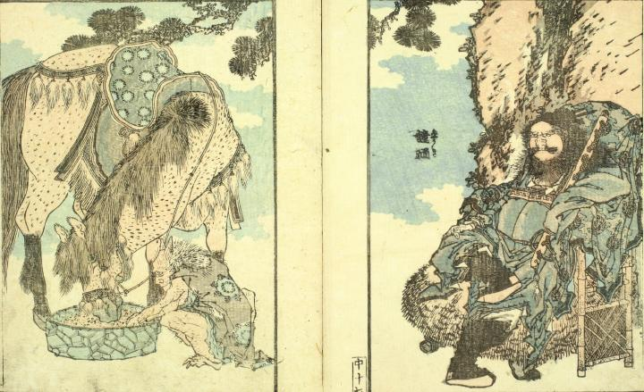

鐘馗の監視の下、馬に餌をやる鬼。2本の角が生え、ボロボロの着物をまとっている。
著作者：葛飾北斎／出典：親書誌：U426_nichibunken_0076：北齋画譜中巻；ホクサイガフチュウカン／日付：2005／資源識別子：U426_nichibunken_0076_0002_0000
Copyright (c)2010- International Research Center for Japanese Studies, Kyoto, Japan. All rights reserved.